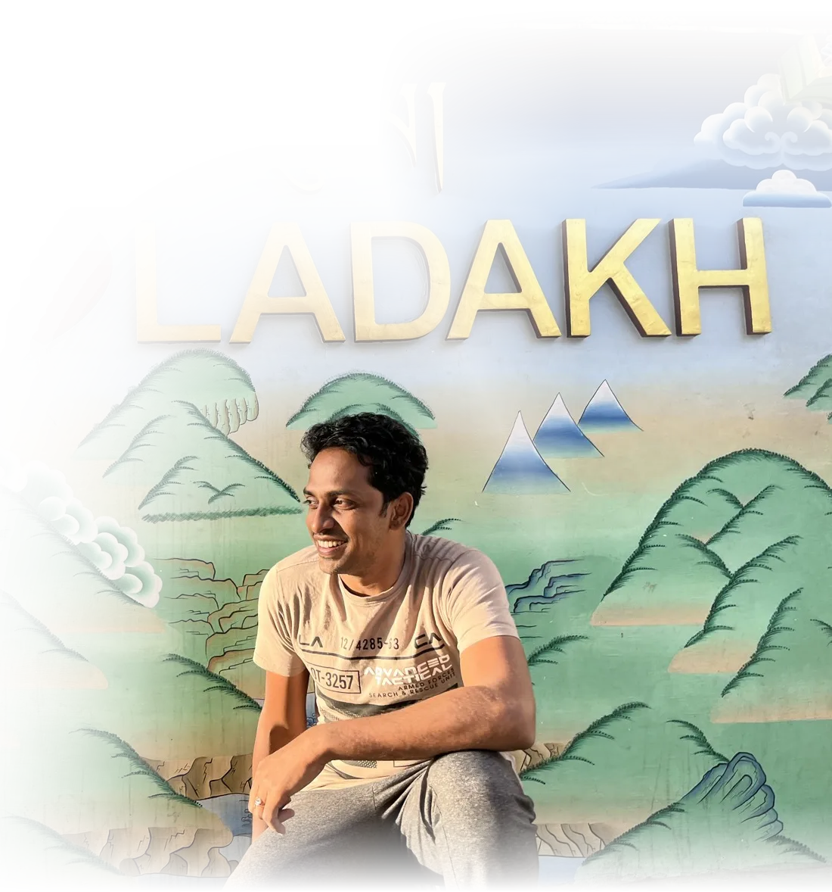
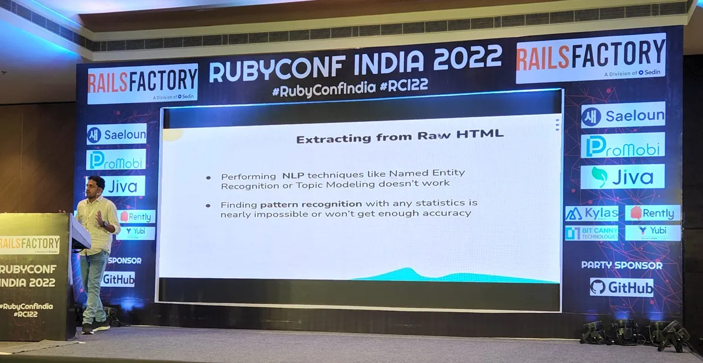
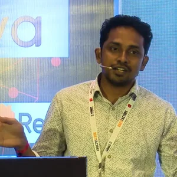
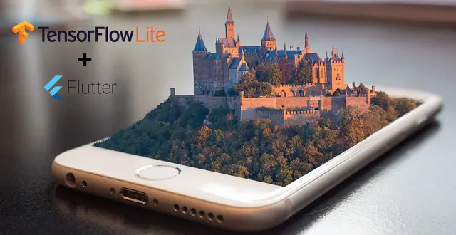
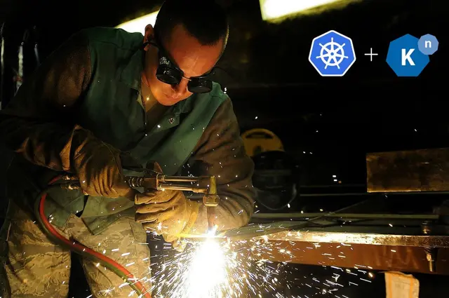
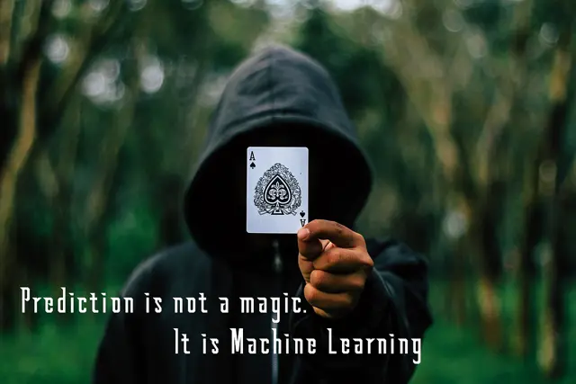
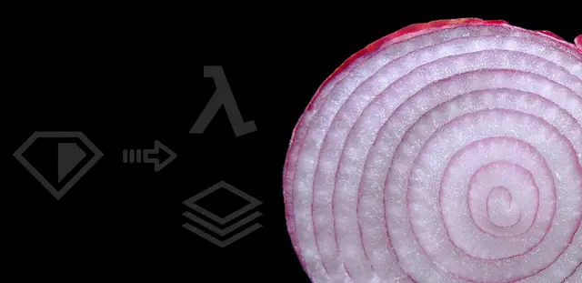
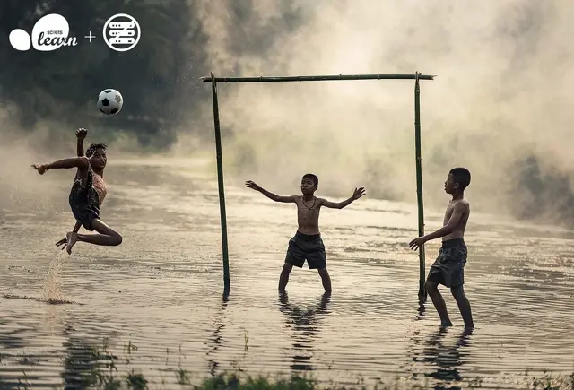

About Me.
The Architect
A Vim fanatic | Data enthusiast | Systems thinker | Founder, acquired by Zoho
18+
years in IT industryin the business, in the code
27+
years of programmingFoxPro in '99 to Rust and AI agents today
I learned this industry by doing whatever the work needed, and that took me to almost every side of software: the pitch and the product, the plan and the code, the release and the night after it. Founding my own product put all of those sides on one desk.
Through all of it, one thing hasn't changed: I love the conversation that finds the real problem, and the code that solves it.

The Seeker
A flautist and silambam player | Samyama practitioner | Tracing the roots of village deities | Happiest on long roads and high hills
12+
years with the fluteCarnatic and film songs
17,582ft
above sea level, on a motorcycleKhardung La, Leh, Ladakh
Away from work, life has its own sides: the field and the flute, the hill and the book, the old temple and the home I designed where Chettinad meets Italy.
Rooted in the Tamil Nadu delta, my hands stay in the soil and my days follow Siddha. Tamil books hold my evenings, the roots of our village deities hold my curiosity, and every February the Velliangiri Hills test both body and faith.
Worked with
Founded
Acquired by Zoho
Work in the Open.
Small tools I needed, which turned out others needed too.
Open source
More on GitHub ↗serverless-ruby-layer
opencv-log
On stage


RubyConf India 2022 · Pune
Data Analytics in Ruby/Rails way
Analytics usually means Python, R or Spark. Through a platform we built and ran in production, I showed how a Rails team can crawl, process and search data at scale with the Ruby it already knows.
View talk ↗Writing.
All on Medium ↗Small lessons from real builds, written down along the way.
Showing posts 1–8 of 15

On-device MLReal-Time Object Detection with Flutter, TensorFlow Lite and Yolo - Part 1 (opens in a new tab)GoGo Modules : Project set up without GOPATH (opens in a new tab)
KubernetesBuild Your Own Serverless Platform on Kubernetes with Knative (opens in a new tab)Machine LearningUsing Machine Learning for Color Calibration with a color-checker (opens in a new tab)ML ToolsGet Started with Machine Learning in Visual Studio Code and Jupyter (opens in a new tab)
PredictionPrediction from Conditionally Dependent Data in Machine Learning (opens in a new tab)
AWS LambdaDeploying Ruby Script to AWS Lambda Function and Layers (opens in a new tab)
MLOpsDeploying Machine Learning Model to AWS Lambda with Serverless (opens in a new tab)Contact Me.
Two ways in, depending on why you're here.
Let's build something.
I help teams design systems, untangle platforms and build with AI, from the first whiteboard sketch to production. Consultant or full-time, tell me where you're stuck, and I'll tell you honestly if I'm the right fit.
- nova@navarasu.com
- Based in
- Tamil Nadu, India · IST (UTC+5:30)
- Open to
- Remote consulting and full-time architect roles
- Elsewhere
Write to me
I read every message and reply to most within a couple of days.